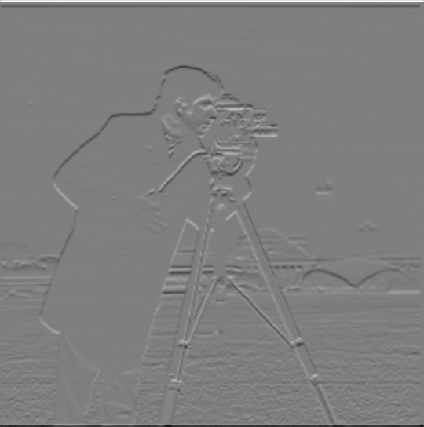
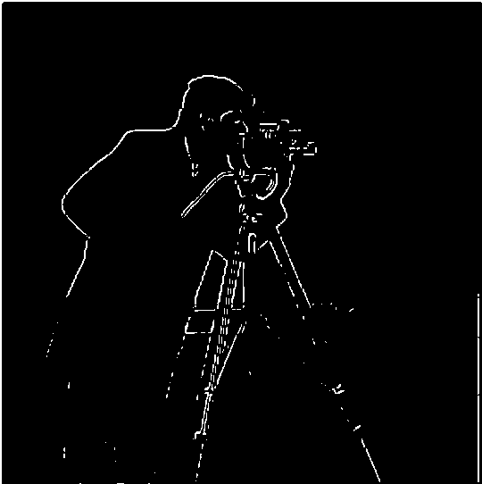
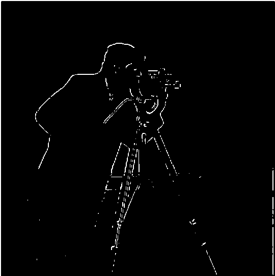

This project explores 2D convolutions, filtering, and frequency domain operations for image processing. The work is divided into two main parts: building intuitions about filters and edges, and exploring frequency-based image manipulations including sharpening, hybrid images, and multi-resolution blending.
Overview
Part 1: Fun with Filters
Part 1.1: Convolutions from Scratch
Implementation Comparison
The runtime on my implementations was significantly slower than the built-in implementation. The four-loop version was the slowest, with a runtime of 126.8491 seconds. The two-loop version had a runtime of 17.2778 seconds. The increase in speed is due to me taking advantage of broadcasting. The built-in had a runtime of 0.8796 seconds. (All runtimes are for convolution of the image and the box filter). In terms of padding, the built-in is in mode 'same,' where it maintains the size of the image by zero-padding it with the size of the pad overall. This is also what my pad_img function does. This padding maintains the size of the image, although it does introduce a slight dark border around the image, due to the zeros being averaged with the image itself. However, the result is the same size as the original image, due to the padding.
Box Filter Results
Original Image
Box Filter (Four Loops)
Box Filter (Two Loops)

Box Filter (Built-in)
Finite Difference Results
D_x (Horizontal Edges)
D_x (Four Loops)

D_x (Two Loops)

D_x (Built-in)
D_y (Vertical Edges)

D_y (Four Loops)
D_y (Two Loops)

D_y (Built-in)
Code Implementation
Padding
def pad_img(img, kernel_height, kernel_width):
pad_height = kernel_height // 2
pad_width = kernel_width // 2
padded_img = np.pad(img, ((pad_height, pad_height), (pad_width, pad_width)))
return padded_img
def four_loop_convolve(image, kernel):
original_height = image.shape[0]
original_width = image.shape[1]
image = pad_img(image, kernel.shape[0], kernel.shape[1])
kernel_width = kernel.shape[1]
kernel_height = kernel.shape[0]
result = np.zeros((original_height, original_width))
for img_row in range(original_height):
for img_col in range(original_width):
res = 0
for kernel_row in range(kernel_height):
for kernel_col in range(kernel_width):
flipped_kernel_row = kernel_height - 1 - kernel_row
flipped_kernel_col = kernel_width - 1 - kernel_col
res += image[img_row + kernel_row, img_col + kernel_col] * kernel[flipped_kernel_row, flipped_kernel_col]
result[img_row][img_col] = res
return result
def two_loop_convolve(image, kernel):
original_height = image.shape[0]
original_width = image.shape[1]
image = pad_img(image, kernel.shape[0], kernel.shape[1])
kernel_width = kernel.shape[1]
kernel_height = kernel.shape[0]
result = np.zeros((original_height, original_width))
flipped_kernel = np.flip(kernel)
for res_row in range(original_height):
for res_col in range(original_width):
img_start_row = res_row
img_end_row = img_start_row + kernel_height
img_start_col = res_col
img_end_col = img_start_col + kernel_width
img_section = image[img_start_row:img_end_row, img_start_col:img_end_col]
result[res_row][res_col] = np.sum(img_section * flipped_kernel)
return result
Part 1.2: Finite Difference Operator
Partial Derivatives
∂/∂x (D_x)

∂/∂y (D_y)
Gradient Magnitude and Edge Detection
Gradient Magnitude
Threshold Selection Process
I tested multiple thresholds for where to binarize my images. There was a tradeoff between including enough of the photographer while also not including too much of the background:

Threshold = 0.3

Threshold = 0.32

Threshold = 0.35

Threshold = 0.37
Threshold = 0.4
Final Choice
Threshold Selection Analysis:Lower threshold values (.3, .32, .35) tended to include a lot of background from the buildings as well as splotchy noise in the bottom right corner. I chose to have a higher threshold of 0.37, where I was able to limit the amount of noise but still include most of the details of the cameraman, which began to disappear when the threhold was 0.4
Part 1.3: Derivative of Gaussian (DoG) Filter
Finite Difference Edge Detection Results
Final Choice
Gaussian Smoothing Edge Detection Results
Smoothed then Edge Detection
Single Convolution (DoG) Results
DoG Edge Detection Result
Differences Observed: The Gaussian smoothing makes finding the balance between edges and noise much clearer. It reduced the noice, enabling moreof the background to be picked up without causing more noise. In fact, the outline of the cameraman is much stronger and more solid once we blur first than if we didn't. The results are the same whether we use the DoG or simply blur before convolution. This is because convolution doesn't take order into account.
Derivative of Gaussian Filters
DoG_x Filter
DoG_y Filter
Gaussian Filter